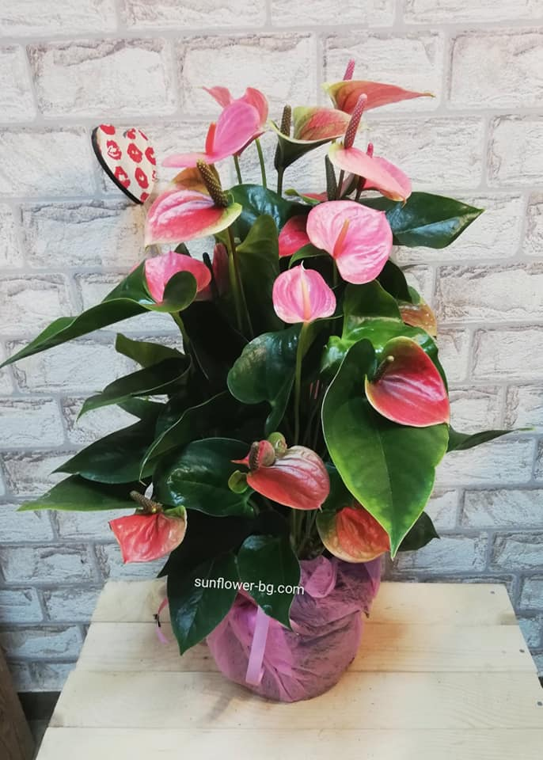

Деликатният аромат,грациозната зеленина и необичайните цветя ще бъдат запомнени от всичко.
За такова цвете са фиксирани имена като „пламтящо цвете“, „език на огъня“ и
в нашата култура е прието да го наричаме просто - „мъжко щастие“.
Антуриум е растение от рода на вечнозелените растения,семейство Ароидни.
Родина:расте на островите на Карибския архипелаг,както и в тропиците и субтропиците на Америка.
Името му може да се преведе от латински като Flowertail,където "anthos" e цвете,а "oura" е опашка.
Тези цветя не изискват специални грижи за себе си,те лесно се опомнят след
неприятности.На височина домашните сортове достигат деветдесет сантиметра.
